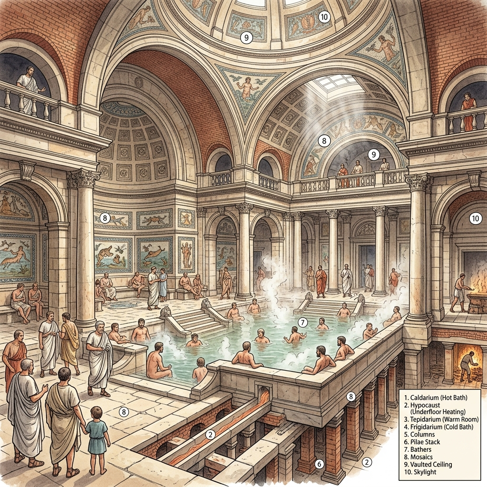

Source A: A reconstruction illustration showing the steaming heated chambers and flowing water channels of a Roman public bathhouse in Roman Britain.
Test your historical foundations. Answer the questions below before moving into today's focus.
Q1: What does the term chronology mean when we study history?
Answer:
Q3: If an archaeologist uncovers a Roman coin buried in a field, is it a primary source or a secondary source?
Answer:
Q5: Put these three eras in the correct chronological order, starting with the oldest: Victorian Britain, Iron Age Britain, Roman Britain.
Answer:
Q2: What is the difference between BC and AD on a timeline?
Answer:
Q4: What is the name given to a professional historical detective who digs up and analyzes physical remains from the past?
Answer:
It is easy to assume that people in the past did not care about cleanliness, but Iron Age communities developed highly practical systems that suited their way of life. Because farming roundhouses were spread out across the countryside, digging simple, temporary cesspits was a safe, hygienic, and sustainable way to manage waste without polluting nearby drinking water. During the British Iron Age (which lasted from around 700 BC until the Roman invasion in AD 43), most families lived in circular wooden homes called roundhouses, such as those discovered by archaeologists at Silchester. Because the people of this era left no written documents behind, historians must rely on physical clues unearthed from the ground—a field of study known as archaeology. These physical discoveries show that Iron Age communities intentionally built their settlements near fresh springs, streams, or hand-dug wells to secure their daily water supply.
This simple way of life was completely transformed in AD 43 when the Roman Empire invaded Britain. The Romans brought revolutionary sanitation technology and a strong belief that clean, flowing water was vital for keeping a society healthy. To bring vast amounts of clean water into their newly built stone towns and military outposts, such as Corbridge, Roman engineers constructed stone channels called conduits. These conduits used the natural pull of gravity to transport fresh water over miles from distant natural springs directly into urban centres.
In Roman Britain, this water supplied grand public bathhouses, such as the famous complex at Bearsden. Bathhouses were bustling social spaces where citizens exercised, relaxed, and washed themselves by walking in sequence through cold rooms, warm rooms, and steaming hot chambers. Clean water also constantly flushed through communal public toilets, known as latrines. At Housesteads Fort on Hadrian's Wall, soldiers sat side-by-side on stone benches built over deep, stone-lined channels. A continuous stream of water beneath the seats swept human waste directly into underground sewers, keeping the fort clean and preventing the spread of deadly diseases. To wipe themselves, Roman soldiers used a wet sponge attached to the end of a shared wooden stick. When the Romans finally left Britain around AD 410, much of this advanced engineering was abandoned, and sanitation slipped back into primitive patterns for centuries.
"I am surrounded by all kinds of noise... picture to yourself the assortment of sounds, which are strong enough to make me hate my very powers of hearing! When the gentlemen are exercising with their lead weights... I hear their groans... and next, hear the screech of a hair-plucker... and the various cries of the sausage-seller, the baker, and the sweet-seller, who hawk their goods about the baths."
— Seneca the Younger, Roman Philosopher, Letters to Lucilius, Letter 56, c. AD 62Active recall deck of essential specification facts. Tap to flip, click next to progress!
(Tap Card to Flip)
Fact Answer
In the 12-mark 'Explain Why' questions, you must link facts directly to explanations. Click on a **Historical Cause** (on the left) and then click its corresponding **Analytical Consequence/Explanation** (on the right) to link them and build your PEEL argument!
Blurting is the ultimate active recall technique. Select a lesson, write down absolutely everything you can remember about it in the box below, then submit to check what facts you retained!
This section is worth 20% of your total GCSE. To achieve top marks, you need to master three specific question types. Use this mark-ladder to understand exactly what the examiner is looking for!
Vault Overview: Go beyond standard timelines! Roleplay as key Elizabethan figures making high-stakes decisions, interview historical characters, or hunt down chronological anomalies.
Make critical choices under real historical constraints and face the consequences.
Intercept coded letters in the Babington Plot. Will you act immediately or spring a trap?
Pass the Religious Settlement of 1559 through a hostile Catholic House of Lords.
Command the English fleet against the Spanish Armada. Navigate sightings, delay logistics, launch fireships, and choose the correct tactics to survive the invasion.
Uncover the motives, fears, and perspectives of key figures in the era.
Interview Diego de Mendoza, stranded on the Irish coast after the defeat of 1588.
Debate the radical John Stubbs to understand the Puritans' rejection of the settlement.
Fix chronological anomalies and categorize legislative acts correctly.
Sort punishments and laws between the 1572 Vagabonds Act and the 1576 Act for the Relief of the Poor.
Spot historical anachronisms in a sailor's journal from Raleigh's Roanoke colony in 1585.
Sort religious policies to balance the scales between Puritans and Catholics. Avoid tipping the country into civil war or foreign invasion!
Snoop on Catholic conspiracies! Decipher encrypted letters from 5 historical case files using Caesar Ciphers to uncover plots against the Queen.
Describe target terms without using obvious taboo words. Designed for the 4-mark exam feature questions!
Test your active recall under a 60-second timer. Describe key terms without using forbidden words, and reveal valid features designed for the 4-mark exam questions.